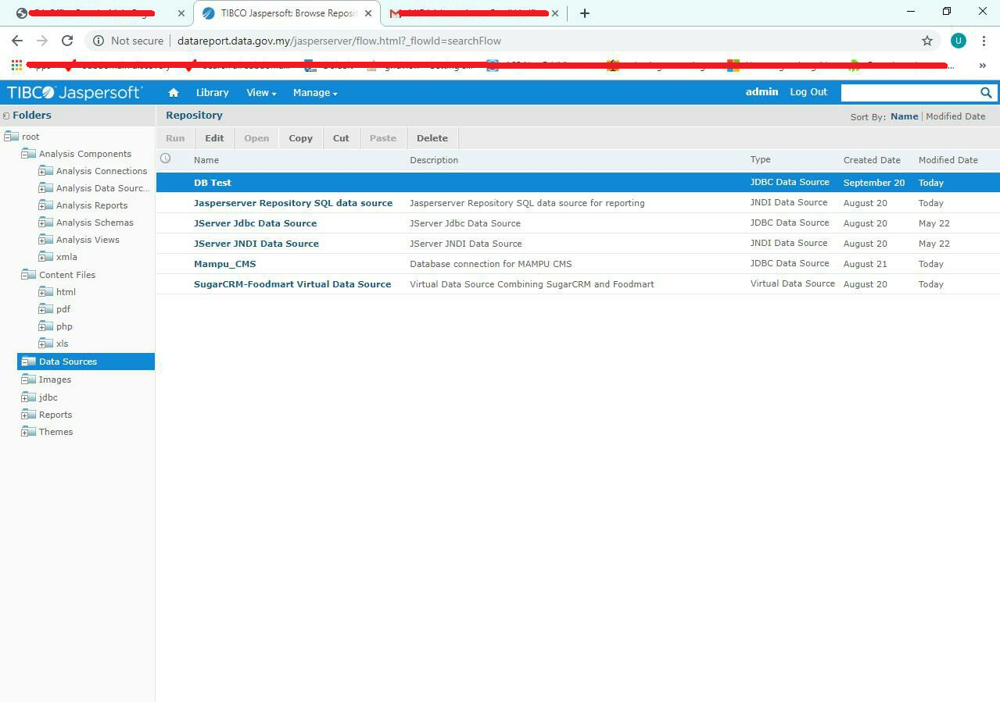
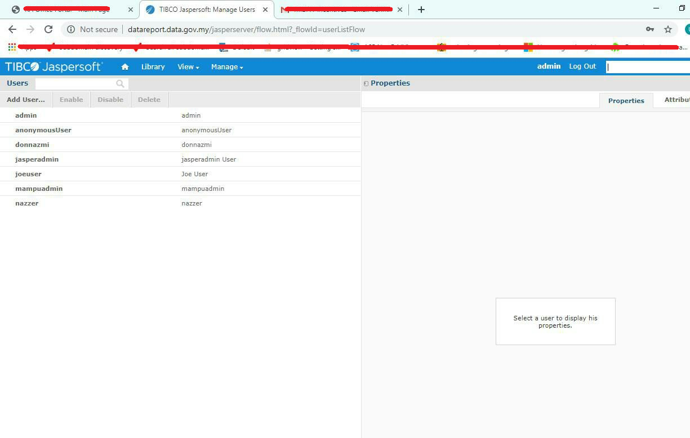

How I found Bug in DATA.GOV.MY JasperServer Weak Default passwd CWE-1391
The product uses weak credentials (such as a default key or hard-coded password) that can be calculated, derived, reused, or guessed by an attacker.
My name is Ungku Nazmi, also known as Don.
I’m from Malaysia 🇲🇾, interested in IT Infrastructure , Software, Penetration Testers, Bug Hunting and Security Research 🔍
You can find me on Github, Facebook, or contact me via Telegram.
DISCLAIMER :
This Vulnerability I've report on October 03, 2019
[Risk Factors]
Technical Impact: Gain Privileges or Assume Identity
An attacker could easily guess user passwords and gain access admin/user accounts.
[Preface]
Default User Password
User ID : superuser , jasperadmin
Password : superuser , jasperadmin
Description : System-wide administrator , Administrator for the default organization
Unsurprisingly, looks like all we got to work with is the web server. Off we go then.
Browsing To The Web Login and Im able to login by Default Admin and Password.

JasperServer Login Admin Dashboard Interface

JasperServer User List Dashboard Interface.
Unfortunately,I am able to create new admin/user account, client-side validation was applied due to Weak Default passwd CWE-1391 functionality allow attacker to login without authentication.
[Affected Component]
Login functionality
[Has vendor confirmed or acknowledged the vulnerability?]
true
[Concluding]
Mission accomplished! Full Weak Default passwd CWE-1391 to get Access into thier system.
Since people have been asking, the bug had already been fixed.
If you have any questions or suggestions, make sure to hit me in any of these mediums or the comments.
Thanks for reading.
Special thanks to Tuan Adzmely Mansor.